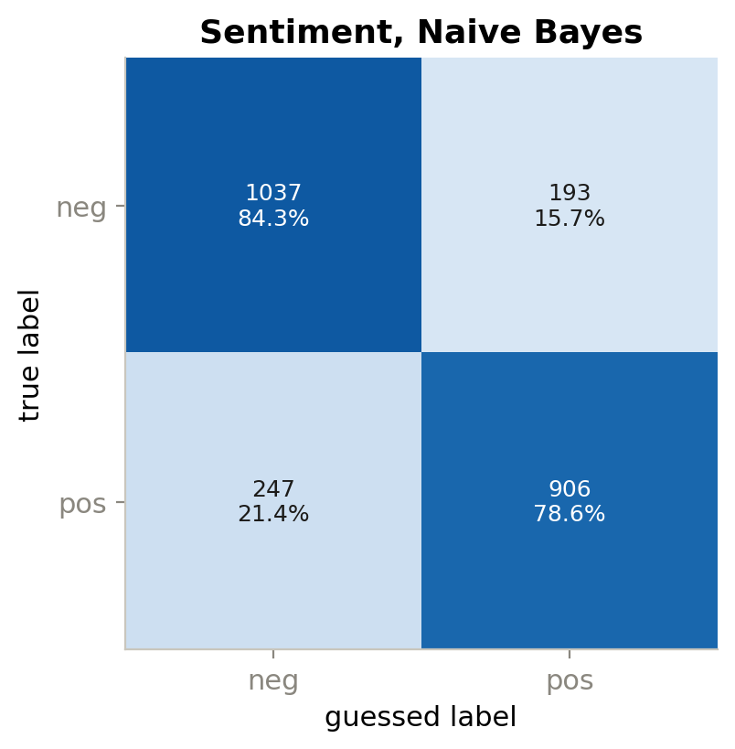
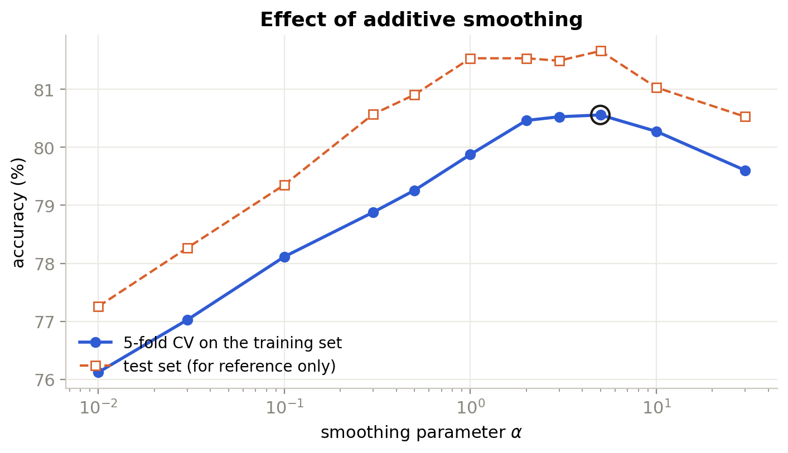
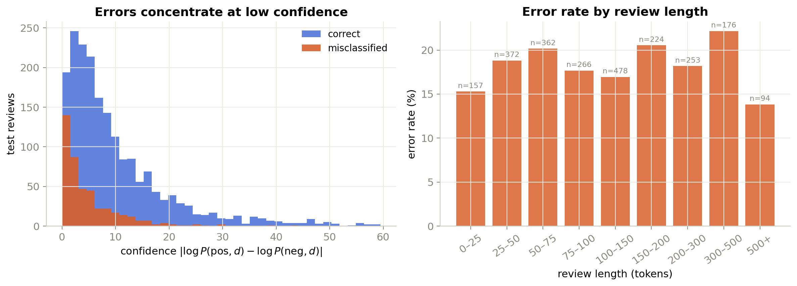
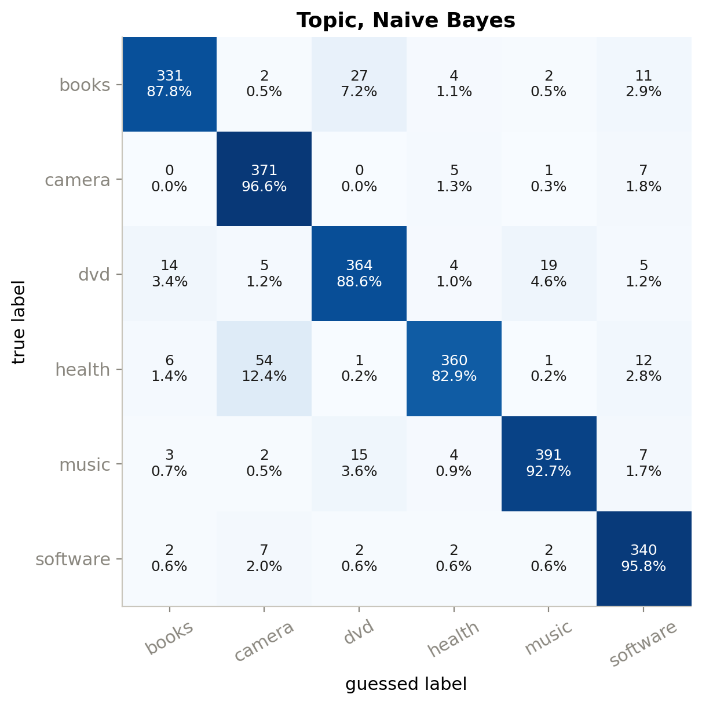
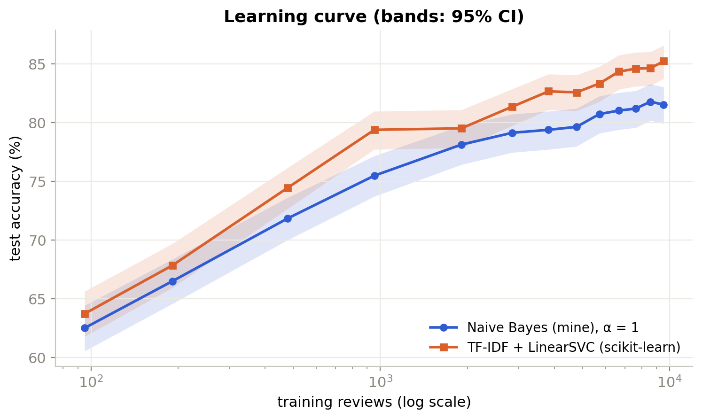
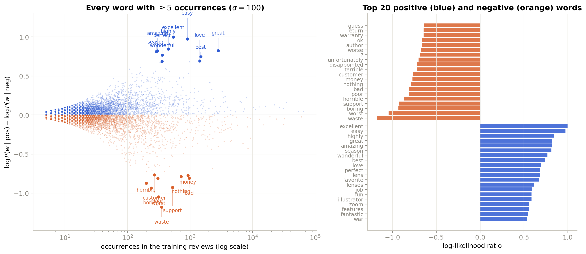
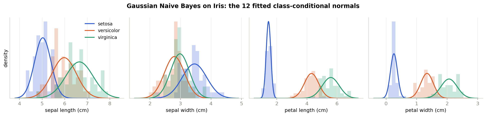
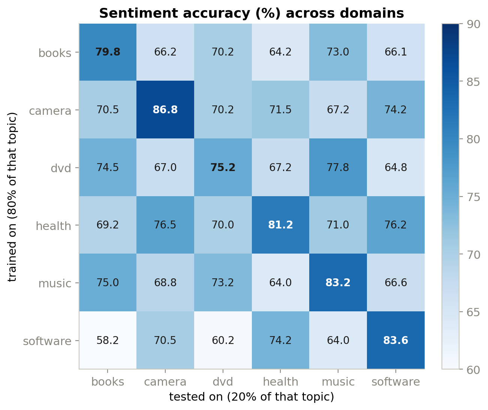

A Naive Bayes sentiment classifier
The data
all_sentiment_shuffled.txt has 11,914 Amazon reviews from six topics (books,
camera, dvd, health, music, software) in Blitzer et al. (2007). Each line holds the topic,
the polarity (pos/neg), a document id and the lowercased, tokenized
text. Classes are almost balanced (6,000 pos, 5,914 neg). Review lengths range from 1 to
5,965 tokens, with a median of 99. read_documents keeps the tokens and the
polarity, exactly as in the handout. Because the file is already shuffled, the first 80% is the training set and the
rest is the test set:
| Split | Reviews | pos | neg |
|---|---|---|---|
| Training (first 80%) | 9,531 | 4,847 | 4,684 |
| Test (last 20%) | 2,383 | 1,153 | 1,230 |
Estimating the parameters: train_nb
Naive Bayes treats a document $d = (w_1,\dots,w_n)$ as a bag of words and assumes that, given the class, the words are independent draws from a class-specific distribution over the vocabulary (the multinomial model):
The maximum-likelihood estimates are relative frequencies. $P(c)$ is the fraction of training documents in class $c$, and $P(w\mid c)$ is the fraction of class-$c$ tokens that are $w$. ML gives probability zero to any word never seen with a class, and a single such word would then rule the class out. So I use additive (Lidstone) smoothing with parameter $\alpha$, and reserve one extra vocabulary slot for words never seen in training:
Here $n_c$ is the number of tokens in class $c$ and $|V|$ the training vocabulary. $\alpha = 1$
is Laplace smoothing. The $+1$ slot makes the distribution over (seen words + "unknown")
sum to one. train_nb counts words with Counter
and stores log probabilities, so scoring is a sum, not a product of thousands of
numbers below $10^{-3}$. The classes come from the data, not hard-coded, so the same function
trains the six-topic classifier later.
Trained on the 9,531 training reviews with $\alpha = 1$: $|V| = 52{,}392$ word types, $n_{\text{pos}} = 720{,}896$ and $n_{\text{neg}} = 714{,}916$ tokens, and $\hat P(\text{pos}) = 0.5086$, $\hat P(\text{neg}) = 0.4914$.
Scoring a document: score_doc_label
score_doc_label(document, label, model) returns $\log P(\text{label}, d)$ using the
formula above. Unknown words are looked up with dict.get and fall back to the
class's unknown-word log probability.
Sanity check 1. For one-word documents I convert back with math.exp:
| Document | $P(\text{pos}, d)$ | $P(\text{neg}, d)$ | Higher |
|---|---|---|---|
['great'] | 0.001321 | 0.000528 | pos ✓ |
['bad'] | 0.000172 | 0.000455 | neg ✓ |
['excellent'] | 0.000291 | 0.000064 | pos ✓ |
['waste'] | 0.000020 | 0.000207 | neg ✓ |
['boring'] | 0.000016 | 0.000138 | neg ✓ |
['the'] | 0.022033 | 0.020441 | (neutral) |
The positive one-word document "great" has probability 0.0013, within the expected 0.001–0.002 range. By hand: "great" occurs 2,008 times in positive and 824 times in negative training reviews, so
As expected, "great" is more likely under pos and "bad" more likely under neg.
Sanity check 2. ['a', 'top-quality', 'performance'] does not crash.
"top-quality" never appears in training, so it gets the unknown-word probability in both
classes: $\log P(\text{pos}, d) = -26.366$ and $\log P(\text{neg}, d) = -27.038$.
Classifying: classify_nb and classify_documents
By Bayes' rule $P(c\mid d) = P(c, d)/P(d)$, and $P(d)$ is the same for every class, so the most probable class is the one with the largest joint log probability:
classify_nb returns this argmax, and classify_documents applies it to a list.
When a probability is needed, posterior normalizes with
log-sum-exp. Some small documents:
| Document | Guess | $P(\text{pos}\mid d)$ | Comment |
|---|---|---|---|
| highly recommend | pos | 0.874 | as expected |
| i loved it | pos | 0.552 | as expected, but only barely |
| a waste of money | neg | 0.042 | as expected |
| returned it | neg | 0.204 | "returned" is a complaint word |
| this is not good | neg | 0.448 | right, but "not" does the work, not "good" |
| not bad at all | neg | 0.194 | wrong: bag of words cannot see that "not" negates "bad" |
Evaluating the classifier
accuracy is the fraction of test documents whose guess equals the true label.
Accuracy on 2,383 documents is a binomial proportion, so I also give a 95%
Wilson score interval (more reliable than $\hat p \pm 1.96\sqrt{\hat p(1-\hat p)/n}$
near 0 or 1 and for small $n$):
With $\alpha = 1$ the classifier labels 1,943 of 2,383 test reviews correctly: accuracy $\boxed{81.54\%}$, 95% CI [79.93%, 83.04%]. Always guessing the majority class (neg) would score 51.62%.

The errors are not symmetric. 247 positive reviews (21.4%) are called negative, but only 193 negative reviews (15.7%) are called positive. Many positive reviews still mention a problem (review C in the error analysis: "the only criticism i would have is the cost of postage"), so complaint words occur in both classes. Every one of the most confident short errors in the error analysis is a positive review called negative.
Choosing the smoothing parameter
Hint 2 suggests smoothing helps. To choose $\alpha$ without touching the test set, I ran 5-fold cross-validation on the training set for $\alpha$ from 0.01 to 30. The test accuracies are shown only for reference.

| $\alpha$ | 0.01 | 0.1 | 0.5 | 1 | 2 | 3 | 5 | 10 | 30 |
|---|---|---|---|---|---|---|---|---|---|
| 5-fold CV (train) | 76.12 | 78.11 | 79.26 | 79.88 | 80.46 | 80.53 | 80.56 | 80.28 | 79.60 |
| Test | 77.26 | 79.35 | 80.91 | 81.54 | 81.54 | 81.49 | 81.66 | 81.03 | 80.53 |
Very little smoothing ($\alpha = 0.01$) loses about 4 points. A word seen once, in only one class, then gets a likelihood ratio of about 100, and rare words (names, typos) dominate the decision. Too much smoothing pulls all word distributions towards uniform. Anything from $\alpha \approx 1$ to 10 is close to the optimum. CV picks $\alpha = 5$, which scores 81.66% on the test set. That is 3 more correct reviews than $\alpha = 1$, and the exact McNemar test on the two prediction lists (39 reviews only $\alpha = 1$ gets right, 42 only $\alpha = 5$ gets right) gives $p = 0.82$, so the difference is noise. I keep $\alpha = 1$ as the reference model in the rest of the report.
McNemar's test is the right way to compare two classifiers on the same test documents. It ignores documents both get right or both get wrong, and asks whether the $b + c$ documents on which they disagree split 50/50, as they would if the accuracies were equal:
Error analysis
The most confident mistakes
Among misclassified test reviews of at most 40 tokens, I sorted by the margin
$\log P(\text{wrong}, d) - \log P(\text{true}, d)$. For each one, the words that pushed
hardest are listed with their contribution
$\log P(w\mid\text{wrong}) - \log P(w\mid\text{true})$ (word_contributions). All
of the most confident short errors are positive reviews called negative.
| Review (true label pos, guessed neg) | Margin | Words that pushed towards neg |
|---|---|---|
| A (software) "i bought zonealarm internet security suite for the included zonealarm pro firewall ( it cost much less that way ) . if i did n't already have norton antivirus , i 'd use the antivirus , too" | 8.09 | zonealarm +2.98, antivirus +1.57, norton +1.39 |
| B (dvd) "this movie is a reallllllllllllly scary movie . the only part i did n't like was that pervert mikks in the beginning . be warned of grossness . that is all i need to say" | 5.50 | warned +1.58, pervert +1.39, scary +0.52, n't +0.38 |
| C (software) "excellent service , and the product worked extremely well . the only criticism i would have is the cost of postage . it was ridiculous , the product came in a big parcel ..." | 4.73 | postage +2.57, ridiculous +2.04, service +1.12 (excellent −1.48) |
| D (music) "this was not a waste of brad 's time or mine . good job !" | 3.72 | waste +2.35, brad +1.51, not +0.45 (job −0.91) |
| E (software) "i was a little diappointed when i found out that i would have to buy more versions to get continued training on this subject ." | 3.05 | diappointed +0.70, training +0.45, buy +0.42 |
A margin of 8.09 means the model put $P(\text{neg}\mid d) = 1/(1 + e^{-8.09}) = 0.9997$ on review A, a positive review. The model is far too confident.
Where the errors happen

| Confidence $|\text{log-odds}|$ | 0–2 | 2–5 | 5–10 | 10–20 | > 20 |
|---|---|---|---|---|---|
| Test reviews | 426 | 587 | 613 | 474 | 283 |
| Error rate | 39.2% | 19.8% | 14.5% | 11.6% | 4.6% |
The error rate falls steadily with the margin, so the score ranks reviews well. But its scale is wrong: a log-odds of 2–5 corresponds to a "posterior" of 88–99%, while the observed accuracy in that bin is only 80%. Review length has no clear effect: the error rate stays between about 14% and 22% across the length bands of Figure 3 (right) with no trend. Long reviews have more evidence, but they also mix more opinions.
1. Topic words standing in for sentiment (A, and "norton" in many others). Product and brand names such as zonealarm, norton, roxio and symantec appear mostly in complaints in the training data (antivirus software gets angry reviews), so the model learned them as negative words. Review A has no opinion words at all. It is a neutral description, and the only signal comes from which products tend to be complained about. Naive Bayes cannot tell "this word expresses an opinion" from "this word co-occurred with opinions".
2. Genre vocabulary (B). For a horror film, "scary", "gross" and "be warned" are praise. Across all six domains these words are mostly negative. The meaning of a word depends on the domain, which the domain-sensitivity experiment measures directly.
3. Mixed reviews and side complaints (C). The reviewer likes the product and complains about postage. Bag of words weighs every token equally, so one strong complaint ("ridiculous", "postage") outweighs "excellent" and "worked extremely well". It has no way of knowing which sentence is about the product.
4. Negation (D, and "not bad at all"). "not a waste" is praise, but the model sees "not" and "waste" as two separate negative words. This is the clearest failure of the independence assumption, and it is what negation marking and bigrams try to fix in the optional tasks.
5. Noisy or ambiguous labels and misspellings (E). "a little diappointed" is honestly
a mild complaint. The pos label comes from the star rating, and the
text alone does not support it. The misspelling "diappointed" also means the strong
"disappointed" feature never fires. Some errors are not really the model's fault.
Over-confidence. All five are short reviews where a handful of words decide the outcome, and the model is very sure of itself because it multiplies the evidence of every word as if each one were independent. Correlated words (zonealarm ×2, antivirus ×2, norton) are counted several times. This is why Naive Bayes ranks reviews well but its probabilities should not be taken literally.
Extensions
A six-category topic classifier
The only change is to read column 0 (topic) instead of column 1:
read_documents(file, label_column=0). train_nb already handles any
number of classes. Same 80/20 split, $\alpha = 1$:
Topic accuracy 90.52% (2,157 / 2,383), 95% CI [89.27%, 91.63%], against 16.7% for guessing. Topic is easier to predict than sentiment because topics have their own nouns, while sentiment words are shared by every topic.

The most typical words per topic (one-vs-rest log-likelihood ratio, $\alpha = 10$) are exactly what you would expect: books — book, author, chapter, novel, reader; camera — camera, lens, canon, battery, zoom; dvd — movie, film, season, scenes, acting; health — hair, shaver, razor, skin, dryer; music — album, song, cd, tracks, band; software — software, program, microsoft, vista, adobe. The biggest confusion is health → camera (54 reviews, 12.4%). The health category includes many personal-care devices (shavers, razors, hair dryers, toothbrushes, scales), and those reviews talk about batteries, charging and how well the device works, as camera reviews do. Books → dvd (27) and dvd → music (19) are probably film adaptations and plot talk, and concert DVDs and soundtracks.
Learning curve
The test set stays fixed (the last 20%). I train on the first 1%, 2%, 5%, 10%, ..., 100% of the training part and plot test accuracy. The scikit-learn classifier from below is included for comparison.

| Training reviews | 95 | 477 | 953 | 1,906 | 4,766 | 7,625 | 9,531 |
|---|---|---|---|---|---|---|---|
| Naive Bayes | 62.5 | 71.8 | 75.5 | 78.1 | 79.7 | 81.2 | 81.5 |
| LinearSVC | 63.7 | 74.4 | 79.4 | 79.5 | 82.6 | 84.6 | 85.2 |
Accuracy grows roughly linearly in $\log n$: about +4 points per doubling at first, falling to about +2 points per doubling at the end. The curve is flattening but has not plateaued, so more data would still help a little. Naive Bayes is already at 78% with a fifth of the data, because it only has to estimate word frequencies. The SVM is ahead at every size and the gap grows from about 1 to 4 points. This matches the classic result that generative classifiers approach their (higher) asymptotic error faster than discriminative ones (Ng & Jordan, 2002).
The most informative words
A natural measure of how strongly a word indicates a class is its log-likelihood ratio, which is exactly the amount one occurrence adds to the log-odds of pos over neg:
print_top_nb(k, model) prints the $k$ words with the largest and smallest LLR.
As the handout warns, the smoothing parameter matters a lot:
| $\alpha$ | Top positive words | Top negative words |
|---|---|---|
| 1 | pluto, lieutenant, maizon, powell, flaxseed, picard, spider-man, jakes | seagal, nis, lisbon, blah, gnr, e18, rip-off, the\x1a |
| 10 | pluto, illustrator, keaton, commander, favorites, season, excellent, amazing | waste, horrible, warranty, refund, boring, worst, repair, disappointing |
| 100 | excellent, easy, highly, great, amazing, season, wonderful, best, love, perfect | waste, worst, boring, support, horrible, poor, bad, nothing, money, customer |
With $\alpha = 1$ the list is dominated by rare names that happen to occur in only one class
(a Steven Seagal film, a Star Trek season). A large $\alpha$ adds 100 pseudo-counts to every
word, which shrinks the LLR of rare words towards zero. Only words that are both
frequent and lopsided survive, so it acts as a frequency-weighted score. The $\alpha = 1$ list also
exposed a flaw in the data: the\x1a (and and\x1a) is "the" followed by a
stray control character. All 20 occurrences are in a single negative review whose text was
corrupted, so it is not a real word. It is too rare to affect the accuracy.

The positive words are general praise (excellent, great, amazing, perfect, love) plus "easy" (easy to use, for software and cameras). The negative list is less about adjectives and more about what went wrong: waste of money, customer support, return, warranty. Unhappy customers describe the after-sales experience. Domain words also appear: "season" is positive (presumably people who buy a whole TV season already like the show), "lens(es)" is positive (happy camera owners talk about lenses and pictures, unhappy ones about batteries and repairs), and "author" is negative. Even punctuation carries some signal: "?" leans negative, perhaps because complaints contain more rhetorical questions.
Naive Bayes for numerical data (Iris)
For continuous features the word probabilities become class-conditional densities. Each of the
4 columns gets one Gaussian per class (12 in total) with ML estimates (sample mean, and variance
with divisor $N$), and score_gnb sums log-densities instead of log
probabilities:

Following the handout's code, 40 random flowers (seed 0) are the test set and the other 110
the training set. My Gaussian NB classifies 38/40 = 95.0% correctly (95% CI [83.5%,
98.6%]; with only 40 flowers the interval is wide) and agrees on every test flower with
sklearn.naive_bayes.GaussianNB(var_smoothing=0). 10-fold cross-validation over all
150 flowers gives a more stable 94.67% (142/150), close to the 95.3% of 5-NN in
Assignment 3. The independence assumption is clearly false here (petal length and petal width
are strongly correlated within each species), but the petal Gaussians are so well separated
that the classification hardly suffers.
A scikit-learn classifier
The handout's pipeline (TF-IDF features, SelectKBest(k='all'), LinearSVC)
trained on the same 80% and tested on the same 20%. As a check of my implementation, I also
ran sklearn.naive_bayes.MultinomialNB(alpha=1) on raw counts.
| Classifier | Accuracy | 95% CI |
|---|---|---|
| My Naive Bayes, $\alpha = 1$ | 81.54% | [79.93, 83.04] |
| scikit-learn MultinomialNB, $\alpha = 1$ | 81.54% | [79.93, 83.04] |
| TF-IDF + LinearSVC | 85.23% | [83.75, 86.60] |
scikit-learn's Naive Bayes makes the same prediction as mine on 99.92% of test reviews (all but 2) and has the same accuracy. The 2 differences come from unknown words: scikit-learn drops them, while I give them the smoothed unknown-word probability, which is slightly different for the two classes because $n_{\text{pos}} \ne n_{\text{neg}}$.
The SVM is 3.7 points better. McNemar: 207 reviews only the SVM gets right and 119 only NB gets right, so $p = 1.3\times10^{-6}$ and the difference is real. The SVM learns its word weights discriminatively, so a group of correlated words (zonealarm, antivirus, norton) shares one weight budget instead of being counted as independent evidence. TF-IDF also down-weights words that appear in most reviews.
Improving the features
Two ideas from the handout, implemented as transformations of the token list before
train_nb. The classifier itself is unchanged.
- Negation marking (Pang et al., 2002),
mark_negation. After a negation word (not, no, never, n't, nothing, without, ...) every token is prefixed withNOT_until the next punctuation mark or "but": "it is not very good , but cheap" → "it is not NOT_very NOT_good , but cheap". - Bigrams,
add_bigrams: the unigrams plus every adjacent pair ("not bad", "waste of", "highly recommend").
| Features ($\alpha = 1$) | Accuracy | 95% CI | Only baseline right | Only this right | McNemar $p$ vs baseline |
|---|---|---|---|---|---|
| Unigrams (baseline) | 81.54% | [79.93, 83.04] | – | – | – |
| Negation marking | 81.37% | [79.75, 82.88] | 116 | 112 | 0.84 |
| Unigrams + bigrams | 85.69% | [84.23, 87.04] | 43 | 142 | $1.5\times10^{-13}$ |
| Negation + bigrams | 85.94% | [84.49, 87.28] | 68 | 173 | $9.9\times10^{-12}$ |
Bigrams help a lot: +4.2 points, highly significant. A pair such as "not bad", "no problems", "waste of" or "highly recommend" carries sentiment that its two words do not carry separately, which handles the negation errors (review D, "not bad at all") and some phrasing errors. Bigram Naive Bayes (85.94%) is now as good as the TF-IDF SVM on unigrams (85.23%; McNemar 164 vs 147, $p = 0.36$).
Negation marking alone changes nothing (81.37% vs 81.54%, $p = 0.84$). It fixes some
reviews and breaks a similar number (116 vs 112). Every marked token
(NOT_good, NOT_work) is a new, rarer feature. It loses the
statistics of the plain word, and at this data size the noise cancels the gain. The scope
rule (until the next punctuation) is also crude: in "do n't hesitate to buy this great camera"
the praise word becomes NOT_great. Combined with bigrams it adds a further 0.25
points, which is within noise.
Domain sensitivity
Each topic is split 80/20 on its own (about 1,600 training and 400 test reviews). A classifier trained on one topic's training part is tested on every topic's test part.

A camera classifier gets 86.8% [83.1, 89.7] on camera reviews but only 70.5% [65.9, 74.8] on book reviews. That is 9.3 points below the in-domain book classifier (79.8%; McNemar on the book test set $p = 0.0013$) and 16.3 points below its own in-domain accuracy. The other direction is worse: a book classifier gets only 66.2% on camera reviews, 20.6 points below a camera classifier ($p = 1.7\times10^{-12}$).
Averaged over the whole matrix, in-domain accuracy is 81.6% and out-of-domain is 69.4%, a drop of about 12 points. The off-diagonal is not uniform. Products transfer to products (camera ↔ health ↔ software, 70–77%) and media to media (books ↔ dvd ↔ music, 70–78%), while software → books (58.2%) is not far above chance (50%). Each domain has its own opinion words: "battery", "warranty" and "returned" mean something only for devices, while "boring", "plot", "characters" and the genre vocabulary of review B only matter for media. The dvd → music cell (77.8%) is higher than dvd → dvd (75.2%), but with 400 test reviews the CIs are about ±4 points, so that is within noise. This is the problem Blitzer et al. (2007) address with domain adaptation.
Python implementation
naive_bayes.py does all the computation. The Naive Bayes part
(train_nb, score_doc_label, classify_nb,
classify_documents, accuracy, and train_gnb /
score_gnb for Iris) uses only the standard library (Counter,
math) and NumPy. scikit-learn is imported only in the optional comparison
(train_sklearn) and to cross-check my results. plots.py only draws.
Run python naive_bayes.py from A4/code/ (about 50 s) to print every
number on this page (saved below as output.txt) and to save the plots to
A4/media/. Tested with Python 3.9, NumPy 1.24, scikit-learn 1.0.2 and
Matplotlib 3.9. all_sentiment_shuffled.txt is the unmodified course data file,
and iris.data is the UCI Iris file from Assignment 3.
naive_bayes.py: classifier, statistics & driver Python
"""
SYDE 572 Assignment 4: text classification with Naive Bayes.
Required
reading the data : read_documents, split
parameter estimation : train_nb (multinomial NB, additive smoothing, log probabilities)
scoring / classifying : score_doc_label, classify_nb, classify_documents, accuracy
statistics : wilson_interval (95% CI of an accuracy), mcnemar (exact p-value for two classifiers)
error analysis : most_confident_errors
Optional
six-category classifier : train_nb on the topic labels
learning curve : learning_curve
informative features : top_features / print_top_nb
numerical data : train_gnb, score_gnb, classify_gnb (Gaussian NB on Iris)
scikit-learn : train_sklearn (TF-IDF + LinearSVC), the only place sklearn is used for classifying
better features : mark_negation, add_bigrams
domain sensitivity : cross_domain
python naive_bayes.py (prints every number in the report and saves the plots to ../media/)
The Naive Bayes code uses only the standard library and NumPy.
"""
import math
import os
from codecs import open
from collections import Counter
import numpy as np
HERE = os.path.dirname(os.path.abspath(__file__))
MEDIA = os.path.join(HERE, "..", "media")
DATA = os.path.join(HERE, "all_sentiment_shuffled.txt")
SEED = 0
# ---------- reading the data ----------
def read_documents(doc_file, label_column=1):
"""One review per line: topic, polarity, document id, tokens. label_column=1 gives polarity, 0 gives topic."""
docs, labels = [], []
with open(doc_file, encoding="utf-8") as f:
for line in f:
words = line.strip().split()
docs.append(words[3:])
labels.append(words[label_column])
return docs, labels
def split(docs, labels, frac=0.80):
"""The handout's split: the file is already shuffled, so the first 80% train and the rest evaluate."""
k = int(frac * len(docs))
return docs[:k], labels[:k], docs[k:], labels[k:]
# ---------- Naive Bayes ----------
def train_nb(documents, labels, alpha=1.0):
"""Multinomial Naive Bayes with additive (Lidstone) smoothing.
P(c) = N_c / N (fraction of documents with label c)
P(w | c) = (count(w, c) + alpha) / (n_c + alpha * (|V| + 1))
count(w, c) is how often word w occurs in documents of class c and n_c is the total number of tokens in class c.
The extra +1 in the vocabulary size reserves one slot for any word never seen in training, so an unknown word
gets probability alpha / (n_c + alpha * (|V| + 1)) and the distribution still sums to one. Everything is stored
as log probabilities. Labels are not hard-coded: any set of categories works.
"""
classes = sorted(set(labels))
counts = {c: Counter() for c in classes}
n_docs = Counter(labels)
for doc, c in zip(documents, labels):
counts[c].update(doc)
vocab = set()
for c in classes:
vocab.update(counts[c])
V = len(vocab) + 1 # +1 for the unknown-word slot
model = {"classes": classes, "alpha": alpha, "vocab": vocab, "counts": counts,
"log_prior": {}, "log_p": {}, "log_unk": {}}
for c in classes:
n_c = sum(counts[c].values())
denom = math.log(n_c + alpha * V)
model["log_prior"][c] = math.log(n_docs[c] / len(labels))
model["log_p"][c] = {w: math.log(counts[c][w] + alpha) - denom for w in vocab}
model["log_unk"][c] = math.log(alpha) - denom
return model
def score_doc_label(document, label, model):
"""log P(label, document) = log P(label) + sum over tokens of log P(word | label) (bag of words, independence)."""
log_p, unk = model["log_p"][label], model["log_unk"][label]
return model["log_prior"][label] + sum(log_p.get(w, unk) for w in document)
def classify_nb(document, model):
"""The label with the highest joint log probability (same as the highest posterior, since P(document) is shared)."""
return max(model["classes"], key=lambda c: score_doc_label(document, c, model))
def classify_documents(docs, model):
return [classify_nb(d, model) for d in docs]
def accuracy(true_labels, guessed_labels):
return sum(t == g for t, g in zip(true_labels, guessed_labels)) / len(true_labels)
def posterior(document, model):
"""P(c | document) for every class, computed stably with log-sum-exp."""
s = np.array([score_doc_label(document, c, model) for c in model["classes"]])
p = np.exp(s - s.max())
return dict(zip(model["classes"], p / p.sum()))
# ---------- statistics ----------
def wilson_interval(k, n, z=1.96):
"""95% Wilson score interval for a proportion k/n (here: an accuracy on n test documents)."""
p = k / n
centre = (p + z * z / (2 * n)) / (1 + z * z / n)
half = z * math.sqrt(p * (1 - p) / n + z * z / (4 * n * n)) / (1 + z * z / n)
return centre - half, centre + half
def mcnemar(true, pred_a, pred_b):
"""Exact (binomial) McNemar test on the same test set. b = A right / B wrong, c = A wrong / B right.
Under H0 (equal accuracy) the discordant documents split 50/50; two-sided p-value."""
b = sum(a == t != p for t, a, p in zip(true, pred_a, pred_b))
c = sum(p == t != a for t, a, p in zip(true, pred_a, pred_b))
n, k = b + c, min(b, c)
p = min(1.0, 2 * sum(math.comb(n, i) for i in range(k + 1)) / 2 ** n) if n else 1.0
return b, c, p
def report(name, true, pred):
"""Accuracy with its 95% CI, as a printed line and as a tuple."""
k, n = sum(t == g for t, g in zip(true, pred)), len(true)
lo, hi = wilson_interval(k, n)
print(f" {name:42s} {100 * k / n:6.2f}% 95% CI [{100 * lo:.2f}, {100 * hi:.2f}] ({k}/{n})")
return k / n, lo, hi
# ---------- error analysis ----------
def most_confident_errors(docs, labels, model, max_len=None, n=5):
"""Misclassified documents sorted by how sure the model was: the log-odds margin of the wrong label over the right one."""
errs = []
for i, (d, t) in enumerate(zip(docs, labels)):
if max_len and len(d) > max_len:
continue
g = classify_nb(d, model)
if g != t:
errs.append((score_doc_label(d, g, model) - score_doc_label(d, t, model), i, t, g))
return sorted(errs, reverse=True)[:n]
def word_contributions(document, model, a="pos", b="neg", n=6):
"""The words that pushed hardest towards a and towards b: log P(w|a) - log P(w|b), summed over occurrences."""
contrib = Counter()
for w in document:
contrib[w] += model["log_p"][a].get(w, model["log_unk"][a]) - model["log_p"][b].get(w, model["log_unk"][b])
ranked = contrib.most_common()
return ranked[:n], ranked[::-1][:n]
# ---------- optional: smoothing and learning curve ----------
def tune_alpha(docs, labels, alphas, folds=5):
"""k-fold CV on the training data only, so the test set is not used to choose alpha."""
idx = np.arange(len(docs)) % folds
out = []
for a in alphas:
accs = []
for f in range(folds):
tr = [i for i in range(len(docs)) if idx[i] != f]
te = [i for i in range(len(docs)) if idx[i] == f]
m = train_nb([docs[i] for i in tr], [labels[i] for i in tr], alpha=a)
accs.append(accuracy([labels[i] for i in te], classify_documents([docs[i] for i in te], m)))
out.append((a, float(np.mean(accs))))
return out
def learning_curve(train_docs, train_labels, test_docs, test_labels, fracs, trainers):
"""Accuracy on the fixed 20% test set when training on the first fraction of the 80% training part."""
rows = []
for f in fracs:
k = int(round(f * len(train_docs)))
row = [f, k]
for train, classify in trainers:
pred = classify(test_docs, train(train_docs[:k], train_labels[:k]))
hits = sum(t == g for t, g in zip(test_labels, pred))
row.append((hits / len(test_labels),) + wilson_interval(hits, len(test_labels)))
rows.append(row)
return rows
# ---------- optional: informative features ----------
def top_features(model, k=15, a="pos", b="neg", min_count=0):
"""Rank words by the log-likelihood ratio log P(w|a) - log P(w|b). A large alpha pulls rare words towards 0,
so the top of the list is words that are both frequent and lopsided rather than one-off typos."""
vocab = [w for w in model["vocab"] if model["counts"][a][w] + model["counts"][b][w] >= min_count]
llr = {w: model["log_p"][a][w] - model["log_p"][b][w] for w in vocab}
top_a = sorted(llr, key=lambda w: (-llr[w], w))[:k] # ties (common for rare words) broken alphabetically
top_b = sorted(llr, key=lambda w: (llr[w], w))[:k]
return [(w, llr[w]) for w in top_a], [(w, llr[w]) for w in top_b]
def print_top_nb(k, model, a="pos", b="neg"):
pos, neg = top_features(model, k, a, b)
show = lambda w: w.encode("unicode_escape").decode() # the data contains a few tokens with control characters
print(f" {a:>8s}: " + ", ".join(show(w) for w, _ in pos))
print(f" {b:>8s}: " + ", ".join(show(w) for w, _ in neg))
def top_by_topic(model, k=8):
"""One-vs-rest for the topic classifier: log P(w|topic) - mean over the other topics of log P(w|other)."""
out = {}
for c in model["classes"]:
others = [o for o in model["classes"] if o != c]
llr = {w: model["log_p"][c][w] - np.mean([model["log_p"][o][w] for o in others]) for w in model["vocab"]}
out[c] = sorted(llr, key=lambda w: (-llr[w], w))[:k]
return out
# ---------- optional: better features ----------
NEGATIONS = {"not", "no", "never", "n't", "nothing", "nobody", "none", "nor", "neither", "cannot", "without"}
CLAUSE_END = {".", ",", "!", "?", ";", ":", "(", ")", "but"}
def mark_negation(doc):
"""Pang et al. (2002): prefix NOT_ to every token after a negation word until the next punctuation mark."""
out, neg = [], False
for w in doc:
if w in CLAUSE_END:
neg = False
out.append(w)
elif w in NEGATIONS:
neg = True
out.append(w)
else:
out.append("NOT_" + w if neg else w)
return out
def add_bigrams(doc):
"""Unigrams plus adjacent word pairs, e.g. 'not good' becomes a feature of its own."""
return doc + [a + " " + b for a, b in zip(doc, doc[1:])]
# ---------- optional: domain sensitivity ----------
def cross_domain(docs, topics, sentiment, alpha=1.0):
"""Split each topic 80/20, train on one topic's 80%, test on every topic's 20%. Returns a len(topics)^2 matrix."""
parts = {}
for t in sorted(set(topics)):
d = [doc for doc, tt in zip(docs, topics) if tt == t]
y = [s for s, tt in zip(sentiment, topics) if tt == t]
parts[t] = split(d, y)
names = sorted(parts)
M = np.zeros((len(names), len(names)))
for i, a in enumerate(names):
m = train_nb(parts[a][0], parts[a][1], alpha)
for j, b in enumerate(names):
M[i, j] = accuracy(parts[b][3], classify_documents(parts[b][2], m))
return names, M, parts
# ---------- optional: Naive Bayes for numerical data ----------
def load_iris():
rows = [line.strip().split(",") for line in open(os.path.join(HERE, "iris.data"), encoding="utf-8") if line.strip()]
X = np.array([[float(v) for v in r[:4]] for r in rows])
Y = [r[4].replace("Iris-", "") for r in rows]
return X, Y
def train_gnb(X, Y):
"""Gaussian NB: for each class, the prior and the ML mean and variance of each column (12 Gaussians for Iris)."""
Y = np.asarray(Y)
classes = sorted(set(Y))
return {"classes": classes,
"log_prior": {c: math.log(np.mean(Y == c)) for c in classes},
"mean": {c: X[Y == c].mean(axis=0) for c in classes},
"var": {c: X[Y == c].var(axis=0) for c in classes}} # ML estimate (divide by N)
def score_gnb(x, label, model):
"""log P(label) + sum over columns of the log of the normal pdf: the word log probabilities become log densities."""
mu, var = model["mean"][label], model["var"][label]
return model["log_prior"][label] + float(np.sum(-0.5 * np.log(2 * np.pi * var) - (x - mu) ** 2 / (2 * var)))
def classify_gnb(X, model):
return [max(model["classes"], key=lambda c: score_gnb(x, c, model)) for x in X]
# ---------- optional: scikit-learn ----------
def train_sklearn(docs, labels):
"""The handout's pipeline: TF-IDF features, SelectKBest(all), linear SVM."""
from sklearn.feature_extraction.text import TfidfVectorizer
from sklearn.feature_selection import SelectKBest
from sklearn.pipeline import make_pipeline
from sklearn.svm import LinearSVC
vec = TfidfVectorizer(preprocessor=lambda x: x, tokenizer=lambda x: x, token_pattern=None)
return make_pipeline(vec, SelectKBest(k="all"), LinearSVC()).fit(docs, labels)
def classify_documents_sklearn(docs, model):
return list(model.predict(docs))
# ---------- driver ----------
if __name__ == "__main__":
import plots
os.makedirs(MEDIA, exist_ok=True)
plots.setup_style()
DOCS, LABELS = read_documents(DATA)
TOPICS = read_documents(DATA, label_column=0)[1]
train_docs, train_labels, eval_docs, eval_labels = split(DOCS, LABELS)
print(f"Data: {len(DOCS)} reviews, {Counter(LABELS)}")
print(f" train {len(train_docs)} ({Counter(train_labels)}), test {len(eval_docs)} ({Counter(eval_labels)})")
print(f" tokens per review: median {int(np.median([len(d) for d in DOCS]))}, "
f"min {min(len(d) for d in DOCS)}, max {max(len(d) for d in DOCS)}")
# ----- training -----
model = train_nb(train_docs, train_labels, alpha=1.0)
print(f"\nModel (alpha = 1): |V| = {len(model['vocab'])}, tokens per class "
+ ", ".join(f"{c} {sum(model['counts'][c].values())}" for c in model["classes"]))
print(" log P(c) = " + ", ".join(f"{c} {model['log_prior'][c]:.4f} (P = {math.exp(model['log_prior'][c]):.4f})"
for c in model["classes"]))
# ----- sanity checks -----
print("\nSanity check 1: one-word documents, P(label, doc)")
for w in ["great", "bad", "excellent", "waste", "the", "boring"]:
p = {c: math.exp(score_doc_label([w], c, model)) for c in model["classes"]}
print(f" [{w!r}] pos {p['pos']:.6f} neg {p['neg']:.6f} -> {classify_nb([w], model)}"
f" (counts: pos {model['counts']['pos'][w]}, neg {model['counts']['neg'][w]})")
doc = ["a", "top-quality", "performance"]
print(f"Sanity check 2: {doc} in vocabulary: {[w in model['vocab'] for w in doc]}")
print(" " + ", ".join(f"log P({c}, doc) = {score_doc_label(doc, c, model):.3f}" for c in model["classes"])
+ f" -> {classify_nb(doc, model)}")
print("Small documents:")
small = [["this", "is", "not", "good"], ["not", "bad", "at", "all"], ["i", "loved", "it"],
["a", "waste", "of", "money"], ["highly", "recommend"], ["returned", "it"]]
for d in small:
print(f" {' '.join(d):22s} -> {classify_nb(d, model)} P(pos|doc) = {posterior(d, model)['pos']:.3f}")
# ----- evaluation -----
print("\nEvaluation on the 20% test set")
pred = classify_documents(eval_docs, model)
report("Naive Bayes, alpha = 1", eval_labels, pred)
tp = sum(t == g == "pos" for t, g in zip(eval_labels, pred))
tn = sum(t == g == "neg" for t, g in zip(eval_labels, pred))
fp = sum(t == "neg" and g == "pos" for t, g in zip(eval_labels, pred))
fn = sum(t == "pos" and g == "neg" for t, g in zip(eval_labels, pred))
print(f" confusion (true x guess): pos/pos {tp}, pos/neg {fn}, neg/pos {fp}, neg/neg {tn}")
print(f" majority-class baseline: {100 * max(Counter(eval_labels).values()) / len(eval_labels):.2f}%")
plots.plot_confusion([[tn, fp], [fn, tp]], ["neg", "pos"], "Sentiment, Naive Bayes",
os.path.join(MEDIA, "confusion_sentiment.png"))
# smoothing parameter, chosen on the training data only
alphas = [0.01, 0.03, 0.1, 0.3, 0.5, 1, 2, 3, 5, 10, 30]
cv = tune_alpha(train_docs, train_labels, alphas)
test_alpha = [(a, accuracy(eval_labels, classify_documents(eval_docs, train_nb(train_docs, train_labels, a))))
for a in alphas]
print(" alpha: " + " ".join(f"{a:>6}" for a in alphas))
print(" 5-fold CV" + "".join(f"{100 * x:8.2f}" for _, x in cv))
print(" test " + "".join(f"{100 * x:8.2f}" for _, x in test_alpha))
best_alpha = max(cv, key=lambda r: r[1])[0]
print(f" best alpha by CV on the training set: {best_alpha}")
plots.plot_alpha(cv, test_alpha, os.path.join(MEDIA, "alpha.png"))
model_best = train_nb(train_docs, train_labels, best_alpha)
pred_best = classify_documents(eval_docs, model_best)
report(f"Naive Bayes, alpha = {best_alpha}", eval_labels, pred_best)
print(f" McNemar alpha=1 vs alpha={best_alpha}: b, c, p = {mcnemar(eval_labels, pred, pred_best)}")
# ----- error analysis -----
print("\nError analysis: most confident mistakes among short reviews (<= 40 tokens)")
for margin, i, t, g in most_confident_errors(eval_docs, eval_labels, model, max_len=40, n=8):
d = eval_docs[i]
toward_g, toward_t = word_contributions(d, model, g, t, n=5)
print(f" #{i} true {t}, guessed {g}, log-odds {margin:.2f}, {len(d)} tokens, topic {TOPICS[len(train_docs) + i]}")
print(f" {' '.join(d)}")
print(f" towards {g}: " + ", ".join(f"{w} {v:+.2f}" for w, v in toward_g))
print(f" towards {t}: " + ", ".join(f"{w} {-v:+.2f}" for w, v in toward_t))
lens = np.array([len(d) for d in eval_docs])
wrong = np.array([t != g for t, g in zip(eval_labels, pred)])
print(" error rate by review length:")
for lo, hi in [(0, 50), (50, 100), (100, 200), (200, 400), (400, 10 ** 6)]:
sel = (lens >= lo) & (lens < hi)
print(f" {lo:4d}-{hi if hi < 10 ** 6 else '':>4}: {100 * wrong[sel].mean():5.2f}% (n = {sel.sum()})")
margins = np.array([abs(score_doc_label(d, "pos", model) - score_doc_label(d, "neg", model)) for d in eval_docs])
print(" error rate by confidence |log-odds|:")
for lo, hi in [(0, 2), (2, 5), (5, 10), (10, 20), (20, 1e9)]:
sel = (margins >= lo) & (margins < hi)
print(f" {lo:3d}-{hi if hi < 1e9 else '':>3}: {100 * wrong[sel].mean():5.2f}% (n = {sel.sum()})")
plots.plot_margins(margins, wrong, lens, os.path.join(MEDIA, "errors.png"))
# ===== optional tasks =====
# ----- six-category topic classifier -----
print("\nOptional: topic classifier (6 classes)")
tr_d, tr_t, ev_d, ev_t = split(DOCS, TOPICS)
topic_model = train_nb(tr_d, tr_t, alpha=1.0)
pred_t = classify_documents(ev_d, topic_model)
report("Naive Bayes, topic", ev_t, pred_t)
names = topic_model["classes"]
C = np.array([[sum(t == a and g == b for t, g in zip(ev_t, pred_t)) for b in names] for a in names])
for a, row in zip(names, C):
print(f" {a:9s} " + " ".join(f"{v:4d}" for v in row) + f" recall {100 * row[names.index(a)] / row.sum():.1f}%")
plots.plot_confusion(C, names, "Topic, Naive Bayes", os.path.join(MEDIA, "confusion_topic.png"))
print(" most typical words per topic:")
by_topic = top_by_topic(train_nb(tr_d, tr_t, alpha=10.0), k=8)
for c, ws in by_topic.items():
print(f" {c:9s} {', '.join(ws)}")
# ----- learning curve -----
print("\nOptional: learning curve (test set fixed, first f of the training part)")
fracs = [0.01, 0.02, 0.05, 0.1, 0.2, 0.3, 0.4, 0.5, 0.6, 0.7, 0.8, 0.9, 1.0]
lc = learning_curve(train_docs, train_labels, eval_docs, eval_labels, fracs,
[(train_nb, classify_documents), (train_sklearn, classify_documents_sklearn)])
for f, k, nb, svm in lc:
print(f" {100 * f:5.0f}% n = {k:5d} NB {100 * nb[0]:6.2f}% LinearSVC {100 * svm[0]:6.2f}%")
plots.plot_learning_curve(lc, os.path.join(MEDIA, "learning_curve.png"))
# ----- informative features -----
print("\nOptional: most informative features (log P(w|pos) - log P(w|neg))")
for a in [1.0, 10.0, 100.0]:
print(f" alpha = {a}")
print_top_nb(15, train_nb(train_docs, train_labels, a))
feat_model = train_nb(train_docs, train_labels, alpha=100.0)
plots.plot_features(feat_model, top_features(feat_model, 20), os.path.join(MEDIA, "features.png"))
# ----- scikit-learn -----
print("\nOptional: scikit-learn TF-IDF + LinearSVC")
svm = train_sklearn(train_docs, train_labels)
pred_svm = classify_documents_sklearn(eval_docs, svm)
report("LinearSVC (TF-IDF)", eval_labels, pred_svm)
print(f" McNemar NB vs SVM: b (NB right only), c (SVM right only), p = {mcnemar(eval_labels, pred, pred_svm)}")
from sklearn.naive_bayes import MultinomialNB
from sklearn.feature_extraction.text import CountVectorizer
cvec = CountVectorizer(preprocessor=lambda x: x, tokenizer=lambda x: x, token_pattern=None)
sk_nb = MultinomialNB(alpha=1.0).fit(cvec.fit_transform(train_docs), train_labels)
pred_sknb = list(sk_nb.predict(cvec.transform(eval_docs)))
agree = np.mean([a == b for a, b in zip(pred, pred_sknb)])
report("sklearn MultinomialNB (check)", eval_labels, pred_sknb)
print(f" agreement with my NB: {100 * agree:.2f}% of test documents")
# ----- better features -----
print("\nOptional: improved features (alpha = 1)")
variants = {"unigrams (baseline)": lambda d: d,
"negation marking": mark_negation,
"unigrams + bigrams": add_bigrams,
"negation + bigrams": lambda d: add_bigrams(mark_negation(d))}
for name, fx in variants.items():
m = train_nb([fx(d) for d in train_docs], train_labels, 1.0)
p = classify_documents([fx(d) for d in eval_docs], m)
report(name, eval_labels, p)
b, c, pv = mcnemar(eval_labels, pred, p)
print(f" vs baseline: only baseline right {b}, only this right {c}, McNemar p = {pv:.2g}")
if name == "negation + bigrams":
print(f" vs LinearSVC: (NB right only, SVM right only, p) = {mcnemar(eval_labels, p, pred_svm)}")
print(f" example: {' '.join(mark_negation('it is not very good , but cheap'.split()))}")
# ----- domain sensitivity -----
print("\nOptional: domain sensitivity (rows = trained on, columns = tested on)")
dnames, M, parts = cross_domain(DOCS, TOPICS, LABELS)
print(" " + "".join(f"{n:>9s}" for n in dnames))
for n, row in zip(dnames, M):
print(f" {n:9s} " + "".join(f"{100 * v:9.1f}" for v in row))
i, j = dnames.index("camera"), dnames.index("books")
for a, b in [(i, j), (j, i)]:
hits_in = round(M[a, a] * len(parts[dnames[a]][3]))
hits_out = round(M[a, b] * len(parts[dnames[b]][3]))
print(f" {dnames[a]} model: in-domain {100 * M[a, a]:.1f}% "
f"{tuple(round(100 * x, 1) for x in wilson_interval(hits_in, len(parts[dnames[a]][3])))}, "
f"on {dnames[b]} {100 * M[a, b]:.1f}% "
f"{tuple(round(100 * x, 1) for x in wilson_interval(hits_out, len(parts[dnames[b]][3])))}")
for b in [j, i]:
m_in = train_nb(parts[dnames[b]][0], parts[dnames[b]][1])
m_out = train_nb(parts[dnames[i if b == j else j]][0], parts[dnames[i if b == j else j]][1])
te_d, te_y = parts[dnames[b]][2], parts[dnames[b]][3]
print(f" McNemar on {dnames[b]} test set, in-domain vs out-of-domain model: "
f"{mcnemar(te_y, classify_documents(te_d, m_in), classify_documents(te_d, m_out))}")
off = M[~np.eye(len(M), dtype=bool)]
print(f" mean in-domain {100 * np.diag(M).mean():.1f}%, mean out-of-domain {100 * off.mean():.1f}%")
plots.plot_domain(dnames, M, os.path.join(MEDIA, "domain.png"))
# ----- Gaussian NB on Iris -----
print("\nOptional: Gaussian Naive Bayes on Iris")
X, Y = load_iris()
rng = np.random.default_rng(SEED)
eval_part = np.zeros(len(Y), bool)
eval_part[rng.choice(len(Y), size=40, replace=False)] = True
Yarr = np.array(Y)
gnb = train_gnb(X[~eval_part], Yarr[~eval_part])
for c in gnb["classes"]:
print(f" {c:10s} mean {np.round(gnb['mean'][c], 3)} sd {np.round(np.sqrt(gnb['var'][c]), 3)}")
pg = classify_gnb(X[eval_part], gnb)
report("my Gaussian NB, 40 random test flowers", list(Yarr[eval_part]), pg)
from sklearn.naive_bayes import GaussianNB
psk = GaussianNB(var_smoothing=0).fit(X[~eval_part], Yarr[~eval_part]).predict(X[eval_part])
print(f" sklearn GaussianNB agrees on {np.mean(np.array(pg) == psk) * 100:.0f}% of test flowers")
folds = np.array_split(rng.permutation(len(Y)), 10)
cv_hits = 0
for f in folds:
mask = np.zeros(len(Y), bool)
mask[f] = True
cv_hits += sum(np.array(classify_gnb(X[mask], train_gnb(X[~mask], Yarr[~mask]))) == Yarr[mask])
lo, hi = wilson_interval(cv_hits, len(Y))
print(f" 10-fold CV: {100 * cv_hits / len(Y):.2f}% 95% CI [{100 * lo:.2f}, {100 * hi:.2f}] ({cv_hits}/{len(Y)})")
plots.plot_gnb(X, Yarr, gnb, os.path.join(MEDIA, "iris_gnb.png"))
plots.py: figures Python
"""
Plotting helpers for SYDE 572 Assignment 4. These only draw: naive_bayes.py computes the numbers.
"""
import numpy as np
import matplotlib.pyplot as plt
BLUE, ORANGE, GREEN = "#2f5bd3", "#d9602b", "#2a9d6f"
CLASS_COLORS = [BLUE, ORANGE, GREEN]
POINT = "#1c1b19"
MUTED = "#8a877f"
def setup_style():
plt.rcParams.update({
"figure.facecolor": "white",
"savefig.facecolor": "white",
"font.size": 11,
"axes.titlesize": 13,
"axes.titleweight": "semibold",
"axes.edgecolor": "#c9c6bd",
"axes.linewidth": 0.8,
"axes.spines.top": False,
"axes.spines.right": False,
"axes.grid": True,
"grid.color": "#ebe9e3",
"xtick.color": MUTED,
"ytick.color": MUTED,
"legend.frameon": False,
"legend.fontsize": 10,
})
def _save(fig, fname):
fig.tight_layout()
fig.savefig(fname, dpi=200, bbox_inches="tight")
plt.close(fig)
# ---------- evaluation ----------
def plot_confusion(C, names, title, fname):
C = np.asarray(C)
size = 3.6 + 0.55 * len(names)
fig, ax = plt.subplots(figsize=(size, size * 0.9))
R = C / C.sum(axis=1, keepdims=True)
ax.imshow(R, cmap="Blues", vmin=0, vmax=1)
for i in range(len(names)):
for j in range(len(names)):
ax.text(j, i, f"{C[i, j]}\n{100 * R[i, j]:.1f}%", ha="center", va="center", fontsize=9,
color="white" if R[i, j] > 0.55 else POINT)
ax.set_xticks(range(len(names)))
ax.set_xticklabels(names, rotation=30 if len(names) > 2 else 0)
ax.set_yticks(range(len(names)))
ax.set_yticklabels(names)
ax.set_xlabel("guessed label")
ax.set_ylabel("true label")
ax.set_title(title)
ax.grid(False)
_save(fig, fname)
def plot_alpha(cv, test, fname):
fig, ax = plt.subplots(figsize=(7.2, 4.2))
a = [r[0] for r in cv]
ax.plot(a, [100 * r[1] for r in cv], color=BLUE, lw=2, marker="o", label="5-fold CV on the training set")
ax.plot(a, [100 * r[1] for r in test], color=ORANGE, lw=1.5, ls="--", marker="s", mfc="white",
label="test set (for reference only)")
best = max(cv, key=lambda r: r[1])
ax.scatter([best[0]], [100 * best[1]], s=140, facecolor="none", edgecolor=POINT, lw=1.5, zorder=5)
ax.set_xscale("log")
ax.set_xlabel(r"smoothing parameter $\alpha$")
ax.set_ylabel("accuracy (%)")
ax.set_title("Effect of additive smoothing")
ax.legend(loc="lower left")
_save(fig, fname)
def plot_margins(margins, wrong, lens, fname):
fig, (ax, ax2) = plt.subplots(1, 2, figsize=(12, 4.4))
bins = np.linspace(0, np.percentile(margins, 99), 40)
ax.hist(margins[~wrong], bins=bins, color=BLUE, alpha=0.75, label="correct")
ax.hist(margins[wrong], bins=bins, color=ORANGE, alpha=0.9, label="misclassified")
ax.set_xlabel(r"confidence $|\log P(\mathrm{pos},d) - \log P(\mathrm{neg},d)|$")
ax.set_ylabel("test reviews")
ax.set_title("Errors concentrate at low confidence")
ax.legend()
edges = [0, 25, 50, 75, 100, 150, 200, 300, 500, 2500]
rate, n, mid = [], [], []
for lo, hi in zip(edges, edges[1:]):
sel = (lens >= lo) & (lens < hi)
rate.append(100 * wrong[sel].mean())
n.append(sel.sum())
mid.append(f"{lo}–{hi}" if hi < 2500 else f"{lo}+")
ax2.bar(range(len(rate)), rate, color=ORANGE, alpha=0.85)
for i, (r, k) in enumerate(zip(rate, n)):
ax2.text(i, r + 0.4, f"n={k}", ha="center", fontsize=8, color=MUTED)
ax2.set_xticks(range(len(rate)))
ax2.set_xticklabels(mid, rotation=35)
ax2.set_xlabel("review length (tokens)")
ax2.set_ylabel("error rate (%)")
ax2.set_title("Error rate by review length")
_save(fig, fname)
# ---------- optional tasks ----------
def plot_learning_curve(rows, fname):
fig, ax = plt.subplots(figsize=(7.6, 4.6))
n = [r[1] for r in rows]
for col, color, marker, label in [(2, BLUE, "o", "Naive Bayes (mine), α = 1"),
(3, ORANGE, "s", "TF-IDF + LinearSVC (scikit-learn)")]:
acc = np.array([100 * r[col][0] for r in rows])
lo = np.array([100 * r[col][1] for r in rows])
hi = np.array([100 * r[col][2] for r in rows])
ax.fill_between(n, lo, hi, color=color, alpha=0.15, lw=0)
ax.plot(n, acc, color=color, lw=2, marker=marker, ms=5, label=label)
ax.set_xscale("log")
ax.set_xlabel("training reviews (log scale)")
ax.set_ylabel("test accuracy (%)")
ax.set_title("Learning curve (bands: 95% CI)")
ax.legend(loc="lower right")
_save(fig, fname)
def plot_features(model, top, fname):
"""Each word: total count (x, log) against its log-likelihood ratio (y); the strongest words are labelled."""
pos, neg = top
words = [w for w in model["vocab"] if model["counts"]["pos"][w] + model["counts"]["neg"][w] >= 5]
freq = np.array([model["counts"]["pos"][w] + model["counts"]["neg"][w] for w in words])
llr = np.array([model["log_p"]["pos"][w] - model["log_p"]["neg"][w] for w in words])
fig, (ax, ax2) = plt.subplots(1, 2, figsize=(14, 6.2), gridspec_kw={"width_ratios": [1.35, 1]})
ax.scatter(freq, llr, s=4, c=np.where(llr > 0, BLUE, ORANGE), alpha=0.25, lw=0)
show = dict(pos[:10] + neg[:10])
labelled = sorted([(f, v, w) for w, f, v in zip(words, freq, llr) if w in show])
for i, (f, v, w) in enumerate(labelled):
c = BLUE if v > 0 else ORANGE
ax.scatter([f], [v], s=18, color=c, zorder=3)
dy = (14 if v > 0 else -14) * (1 + i % 3) # stagger labels so neighbours do not collide
ax.annotate(w, (f, v), xytext=(0, dy), textcoords="offset points", fontsize=8.5, color=c, ha="center",
arrowprops=dict(arrowstyle="-", color=c, lw=0.5, alpha=0.6))
ax.axhline(0, color=MUTED, lw=0.8)
ax.set_ylim(llr.min() - 0.3, llr.max() + 0.3)
ax.set_xscale("log")
ax.set_xlabel("occurrences in the training reviews (log scale)")
ax.set_ylabel(r"$\log P(w\mid\mathrm{pos}) - \log P(w\mid\mathrm{neg})$")
ax.set_title(r"Every word with $\geq 5$ occurrences ($\alpha = %g$)" % model["alpha"])
k = len(pos)
ax2.barh(np.arange(k), [v for _, v in pos][::-1], color=BLUE, alpha=0.85)
ax2.barh(np.arange(k, 2 * k) + 0.6, [v for _, v in neg], color=ORANGE, alpha=0.85)
ax2.set_yticks(list(np.arange(k)) + list(np.arange(k, 2 * k) + 0.6))
ax2.set_yticklabels([w for w, _ in pos][::-1] + [w for w, _ in neg], fontsize=9)
ax2.axvline(0, color=MUTED, lw=0.8)
ax2.set_xlabel("log-likelihood ratio")
ax2.set_title(f"Top {k} positive (blue) and negative (orange) words")
ax2.grid(axis="y", visible=False)
_save(fig, fname)
def plot_domain(names, M, fname):
fig, ax = plt.subplots(figsize=(6.8, 5.6))
im = ax.imshow(100 * M, cmap="Blues", vmin=60, vmax=90)
for i in range(len(names)):
for j in range(len(names)):
ax.text(j, i, f"{100 * M[i, j]:.1f}", ha="center", va="center", fontsize=10,
fontweight="bold" if i == j else "normal", color="white" if M[i, j] > 0.8 else POINT)
ax.set_xticks(range(len(names)))
ax.set_xticklabels(names)
ax.set_yticks(range(len(names)))
ax.set_yticklabels(names)
ax.set_xlabel("tested on (20% of that topic)")
ax.set_ylabel("trained on (80% of that topic)")
ax.set_title("Sentiment accuracy (%) across domains")
ax.grid(False)
fig.colorbar(im, ax=ax, fraction=0.046, pad=0.04)
_save(fig, fname)
def plot_gnb(X, Y, model, fname):
names = ["sepal length", "sepal width", "petal length", "petal width"]
fig, axes = plt.subplots(1, 4, figsize=(15, 3.6))
for j, ax in enumerate(axes):
xs = np.linspace(X[:, j].min() - 0.5, X[:, j].max() + 0.5, 300)
for c, color in zip(model["classes"], CLASS_COLORS):
mu, sd = model["mean"][c][j], np.sqrt(model["var"][c][j])
ax.hist(X[Y == c, j], bins=np.linspace(xs[0], xs[-1], 30), density=True, color=color, alpha=0.25)
ax.plot(xs, np.exp(-(xs - mu) ** 2 / (2 * sd * sd)) / (sd * np.sqrt(2 * np.pi)), color=color, lw=2,
label=c)
ax.set_xlabel(f"{names[j]} (cm)")
ax.set_yticks([])
axes[0].set_ylabel("density")
axes[0].legend()
fig.suptitle("Gaussian Naive Bayes on Iris: the 12 fitted class-conditional normals", fontweight="semibold")
_save(fig, fname)
output.txt: everything the program prints Text
Data: 11914 reviews, Counter({'pos': 6000, 'neg': 5914})
train 9531 (Counter({'pos': 4847, 'neg': 4684})), test 2383 (Counter({'neg': 1230, 'pos': 1153}))
tokens per review: median 99, min 1, max 5965
Model (alpha = 1): |V| = 52392, tokens per class neg 714916, pos 720896
log P(c) = neg -0.7104 (P = 0.4914), pos -0.6762 (P = 0.5086)
Sanity check 1: one-word documents, P(label, doc)
['great'] pos 0.001321 neg 0.000528 -> pos (counts: pos 2008, neg 824)
['bad'] pos 0.000172 neg 0.000455 -> neg (counts: pos 261, neg 709)
['excellent'] pos 0.000291 neg 0.000064 -> pos (counts: pos 441, neg 99)
['waste'] pos 0.000020 neg 0.000207 -> neg (counts: pos 30, neg 322)
['the'] pos 0.022033 neg 0.020441 -> pos (counts: pos 33502, neg 31914)
['boring'] pos 0.000016 neg 0.000138 -> neg (counts: pos 24, neg 215)
Sanity check 2: ['a', 'top-quality', 'performance'] in vocabulary: [True, False, True]
log P(neg, doc) = -27.038, log P(pos, doc) = -26.366 -> pos
Small documents:
this is not good -> neg P(pos|doc) = 0.448
not bad at all -> neg P(pos|doc) = 0.194
i loved it -> pos P(pos|doc) = 0.552
a waste of money -> neg P(pos|doc) = 0.042
highly recommend -> pos P(pos|doc) = 0.874
returned it -> neg P(pos|doc) = 0.204
Evaluation on the 20% test set
Naive Bayes, alpha = 1 81.54% 95% CI [79.93, 83.04] (1943/2383)
confusion (true x guess): pos/pos 906, pos/neg 247, neg/pos 193, neg/neg 1037
majority-class baseline: 51.62%
alpha: 0.01 0.03 0.1 0.3 0.5 1 2 3 5 10 30
5-fold CV 76.12 77.02 78.11 78.88 79.26 79.88 80.46 80.53 80.56 80.28 79.60
test 77.26 78.26 79.35 80.57 80.91 81.54 81.54 81.49 81.66 81.03 80.53
best alpha by CV on the training set: 5
Naive Bayes, alpha = 5 81.66% 95% CI [80.06, 83.16] (1946/2383)
McNemar alpha=1 vs alpha=5: b, c, p = (39, 42, 0.8243132151052077)
Error analysis: most confident mistakes among short reviews (<= 40 tokens)
#378 true pos, guessed neg, log-odds 8.09, 37 tokens, topic software
i bought zonealarm internet security suite for the included zonealarm pro firewall ( it cost much less that way ) . if i did n't already have norton antivirus , i 'd use the antivirus , too
towards neg: zonealarm +2.98, antivirus +1.57, norton +1.39, internet +0.50, security +0.49
towards pos: suite +0.64, included +0.61, use +0.35, ( +0.17, ) +0.16
#1740 true pos, guessed neg, log-odds 5.50, 35 tokens, topic dvd
this movie is a reallllllllllllly scary movie . the only part i did n't like was that pervert mikks in the beginning . be warned of grossness . that is all i need to say
towards neg: warned +1.58, pervert +1.39, scary +0.52, did +0.48, n't +0.38
towards pos: is +0.25, need +0.24, part +0.15, in +0.11, of +0.09
#838 true pos, guessed neg, log-odds 4.73, 40 tokens, topic software
excellent service , and the product worked extremely well . the only criticism i would have is the cost of postage . it was ridiculous , the product came in a big parcel , and inside was a dvd .
towards neg: postage +2.57, ridiculous +2.04, service +1.12, was +0.62, product +0.58
towards pos: excellent +1.48, parcel +0.69, well +0.44, and +0.31, criticism +0.23
#1151 true pos, guessed neg, log-odds 3.78, 37 tokens, topic software
i needed this for my new macbook laptop that will give me apple and windows on the same machine . the laptop works fine , the pocketbook is thinner . you do what you have to do
towards neg: apple +1.26, laptop +0.94, do +0.69, machine +0.68, windows +0.60
towards pos: macbook +1.09, works +0.45, and +0.15, you +0.14, is +0.12
#1507 true pos, guessed neg, log-odds 3.72, 15 tokens, topic music
this was not a waste of brad 's time or mine . good job !
towards neg: waste +2.35, brad +1.51, not +0.45, was +0.31, mine +0.19
towards pos: job +0.91, good +0.11, 's +0.10, of +0.09, a +0.08
#2242 true pos, guessed neg, log-odds 3.13, 40 tokens, topic music
another hot release , top 5 in 2005 so far . no one even metions track 7 produced by one and only el-producto and track 8 by belief . hot cd recommend to those who do n't listin to bull
towards neg: bull +1.04, 2005 +0.95, belief +0.90, no +0.44, n't +0.38
towards pos: recommend +0.60, track +0.41, those +0.34, and +0.31, top +0.24
#1373 true pos, guessed neg, log-odds 3.10, 35 tokens, topic camera
works great on my s2is , clicked on silver on main page but switched to black on order form , did n't notice this but i like the black anyway . looks good with acc
towards neg: s2is +1.39, acc +0.70, did +0.48, n't +0.38, looks +0.38
towards pos: great +0.88, silver +0.69, works +0.45, good +0.11, with +0.09
#678 true pos, guessed neg, log-odds 3.05, 25 tokens, topic software
i was a little diappointed when i found out that i would have to buy more versions to get continued training on this subject .
towards neg: diappointed +0.70, training +0.45, buy +0.42, i +0.38, would +0.36
towards pos: little +0.24, more +0.17, versions +0.09, a +0.08, continued +0.06
error rate by review length:
0- 50: 17.77% (n = 529)
50- 100: 19.11% (n = 628)
100- 200: 18.09% (n = 702)
200- 400: 20.00% (n = 355)
400- : 16.57% (n = 169)
error rate by confidence |log-odds|:
0- 2: 39.20% (n = 426)
2- 5: 19.76% (n = 587)
5- 10: 14.52% (n = 613)
10- 20: 11.60% (n = 474)
20- : 4.59% (n = 283)
Optional: topic classifier (6 classes)
Naive Bayes, topic 90.52% 95% CI [89.27, 91.63] (2157/2383)
books 331 2 27 4 2 11 recall 87.8%
camera 0 371 0 5 1 7 recall 96.6%
dvd 14 5 364 4 19 5 recall 88.6%
health 6 54 1 360 1 12 recall 82.9%
music 3 2 15 4 391 7 recall 92.7%
software 2 7 2 2 2 340 recall 95.8%
most typical words per topic:
books book, author, books, chapter, novel, reader, pages, read
camera camera, lens, canon, battery, pictures, cameras, flash, zoom
dvd movie, film, films, season, dvd, movies, scenes, acting
health hair, shaver, shave, razor, skin, dryer, shaving, brush
music album, song, songs, cd, albums, tracks, music, band
software software, program, microsoft, vista, adobe, windows, xp, norton
Optional: learning curve (test set fixed, first f of the training part)
1% n = 95 NB 62.53% LinearSVC 63.74%
2% n = 191 NB 66.51% LinearSVC 67.86%
5% n = 477 NB 71.84% LinearSVC 74.44%
10% n = 953 NB 75.49% LinearSVC 79.40%
20% n = 1906 NB 78.14% LinearSVC 79.52%
30% n = 2859 NB 79.14% LinearSVC 81.37%
40% n = 3812 NB 79.40% LinearSVC 82.67%
50% n = 4766 NB 79.65% LinearSVC 82.58%
60% n = 5719 NB 80.74% LinearSVC 83.34%
70% n = 6672 NB 81.03% LinearSVC 84.35%
80% n = 7625 NB 81.20% LinearSVC 84.60%
90% n = 8578 NB 81.79% LinearSVC 84.64%
100% n = 9531 NB 81.54% LinearSVC 85.23%
Optional: most informative features (log P(w|pos) - log P(w|neg))
alpha = 1.0
pos: pluto, lieutenant, maizon, powell, flaxseed, picard, spider-man, jakes, onenote, photographers, snack, snapfire, buffy, encarta, valjean
neg: seagal, nis, lisbon, blah, gnr, e18, rip-off, the\x1a, dennett, bras, trite, uninstalled, cheaply, ludemann, and\x1a
alpha = 10.0
pos: pluto, illustrator, keaton, commander, favorites, season, excellent, amazing, buffy, allows, lenses, organic, lieutenant, cs, batman
neg: waste, horrible, warranty, refund, boring, worst, repair, disappointing, garbage, seagal, roxio, symantec, disappointment, lame, ridiculous
alpha = 100.0
pos: excellent, easy, highly, great, amazing, season, wonderful, best, love, perfect, lens, favorite, lenses, job, fun
neg: waste, worst, boring, support, horrible, poor, bad, nothing, money, customer, terrible, disappointed, unfortunately, ?, worse
Optional: scikit-learn TF-IDF + LinearSVC
LinearSVC (TF-IDF) 85.23% 95% CI [83.75, 86.60] (2031/2383)
McNemar NB vs SVM: b (NB right only), c (SVM right only), p = (119, 207, 1.256071832889255e-06)
sklearn MultinomialNB (check) 81.54% 95% CI [79.93, 83.04] (1943/2383)
agreement with my NB: 99.92% of test documents
Optional: improved features (alpha = 1)
unigrams (baseline) 81.54% 95% CI [79.93, 83.04] (1943/2383)
vs baseline: only baseline right 0, only this right 0, McNemar p = 1
negation marking 81.37% 95% CI [79.75, 82.88] (1939/2383)
vs baseline: only baseline right 116, only this right 112, McNemar p = 0.84
unigrams + bigrams 85.69% 95% CI [84.23, 87.04] (2042/2383)
vs baseline: only baseline right 43, only this right 142, McNemar p = 1.5e-13
negation + bigrams 85.94% 95% CI [84.49, 87.28] (2048/2383)
vs baseline: only baseline right 68, only this right 173, McNemar p = 9.9e-12
vs LinearSVC: (NB right only, SVM right only, p) = (164, 147, 0.3642837578605541)
example: it is not NOT_very NOT_good , but cheap
Optional: domain sensitivity (rows = trained on, columns = tested on)
books camera dvd health music software
books 79.8 66.2 70.2 64.2 73.0 66.1
camera 70.5 86.8 70.2 71.5 67.2 74.2
dvd 74.5 67.0 75.2 67.2 77.8 64.8
health 69.2 76.5 70.0 81.2 71.0 76.2
music 75.0 68.8 73.2 64.0 83.2 66.6
software 58.2 70.5 60.2 74.2 64.0 83.6
camera model: in-domain 86.8% (83.1, 89.7), on books 70.5% (65.9, 74.8)
books model: in-domain 79.8% (75.5, 83.4), on camera 66.2% (61.5, 70.7)
McNemar on books test set, in-domain vs out-of-domain model: (82, 45, 0.001307385123499996)
McNemar on camera test set, in-domain vs out-of-domain model: (111, 29, 1.6638844634724402e-12)
mean in-domain 81.6%, mean out-of-domain 69.4%
Optional: Gaussian Naive Bayes on Iris
setosa mean [5.03 3.459 1.446 0.257] sd [0.365 0.402 0.154 0.115]
versicolor mean [5.977 2.803 4.306 1.34 ] sd [0.544 0.331 0.475 0.206]
virginica mean [6.653 2.984 5.584 2.061] sd [0.607 0.311 0.566 0.266]
my Gaussian NB, 40 random test flowers 95.00% 95% CI [83.50, 98.62] (38/40)
sklearn GaussianNB agrees on 100% of test flowers
10-fold CV: 94.67% 95% CI [89.83, 97.27] (142/150)
References & acknowledgements
- SYDE 572 Assignment 4 handout (based on a Chalmers University assignment).
- Data: J. Blitzer, M. Dredze and F. Pereira, "Biographies, Bollywood, Boom-boxes and Blenders: Domain Adaptation for Sentiment Classification", ACL 2007.
- B. Pang, L. Lee and S. Vaithyanathan, "Thumbs up? Sentiment Classification using Machine Learning Techniques", EMNLP 2002 (negation marking).
- A. Y. Ng and M. I. Jordan, "On Discriminative vs. Generative Classifiers: A comparison of logistic regression and naive Bayes", NIPS 2002.
- Iris: UCI Machine Learning Repository (archive.ics.uci.edu/dataset/53/iris).
- Naive Bayes written by me with the Python standard library and NumPy. scikit-learn
(
LinearSVC,TfidfVectorizer,MultinomialNB,GaussianNB) is used only for the optional comparison and to check my results. Plots with Matplotlib.